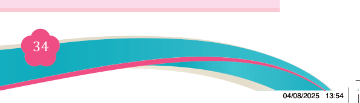

Fine Art for Secondary Schools

34

Student’s Book Form Two

2. Match the items in Column A with their corresponding statements in Column B.


Column A
Column B
1
A view-finder
i)
A category of still life which
applies composition of unrelated objects
2
The subject matter
ii)
A tool that enables artists to frame
or crop a particular scene to arrange their composition.
3
Symbolic still life
iii)
The main idea that is to be
communicated in a still life
4
Types of still life
composition
iv)
Man-made or natural objects
5
Still life composition
objects
v)
Household pieces, flower or fruit pieces, animal pieces and symbolic
still life. vi)
The objects must be in one size
vii
In sight size technique, a pencil, a
painting brush
3. Briefly describe the following concepts:
(i) Perspective
(ii) Proportion
(iii) Rule of the third
(iv) Inanimate objects
(v) Centre of interest
4. Fill in the blanks.
(i) Still life composition involves ________ objects that are arranged for observation and drawing.
(ii) ________ still life involves unrelated objects arranged for symbolic meaning.
5. Write True if the statement is correct or False if the statement is incorrect.
(i) Still life only includes natural objects like fruits and flowers.
(ii) Symbolic still life often carries spiritual or hidden meanings.
04/08/2025 13:54